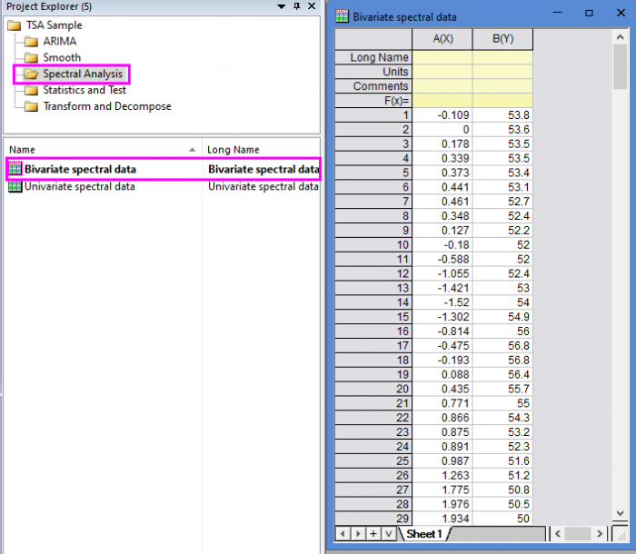
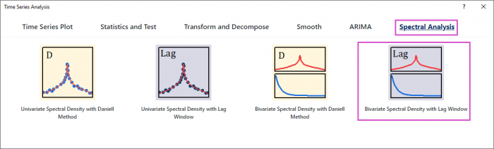
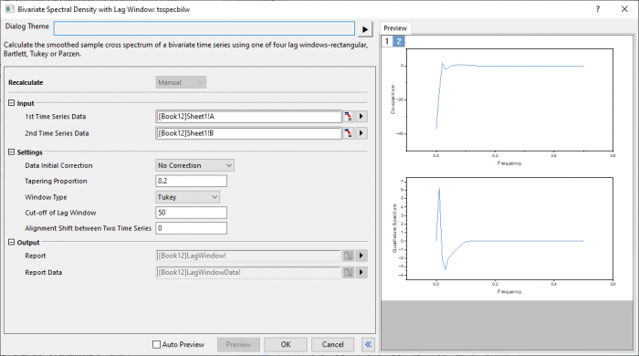
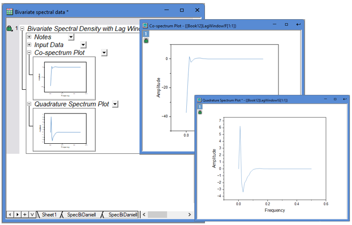
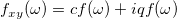
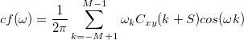
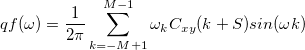
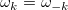
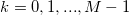
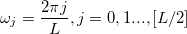

Bivariate Spectral Density with Lag Window
Bivariate-Lag
Tutorial
- Open the sample project file in Origin, go to Folder Spectral Analysis using the Project Explorer. Activate the workbook Bivariate spectral data.

- Highlight column A and B in worksheet. Click the Time Series Analysis App icon
 in the Apps Gallery window.
in the Apps Gallery window.
- Choose Spectral Analysis tab. Click Bivariate Spectral Density with Lag Window icon to open the dialog.

- In the Setting branch, choose No correction. Enter 0.2 in Tapering Proportion. Choose Tukey window type. Enter 50 and 0 in Cut-off of Lag Window and Aligment Shift between Two Time Series.

- Click Preview button to display smoothed spectrum.
- Click OK button to output the report.

Algorithm
The smoothed sample cross spectrum is a complex valued function of frequency  ,
,

, defined by its real part or co-spectrum

and imaginary part or quadrature spectrum:

where

, for 
, is the smoothing lag window as described in Univariate Spectral Density with Lag Window.
The results are calculated for frequency values

where [ ] denotes the integer part.
Reference
- nag_tsa_spectrum_bivar_cov (g13ccc)